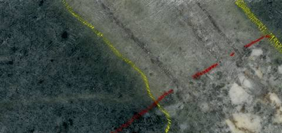
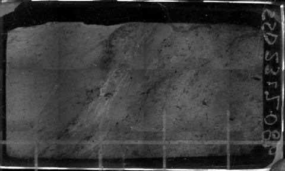
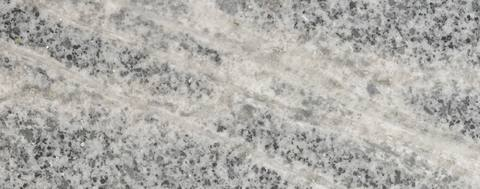

MDRU µXRF sample library
Pick up a sample, find its deposit suite, and tap the photo you recognise to open its element maps. Element maps are window counts, not concentrations.

Sitka — RC Gold project21 samples

Saddle (Tatogga)37 samples

Valley — RIRGS veins12 samples
Sitka — RC Gold project
Intrusion-related gold: slabs from Sitka Gold's RC Gold project, Yukon (Eduardo Pérez, MDRU). 100 µm maps.
Blackjack
Josephine
Pukelman
Rhosgobel
other holes
Saddle (Tatogga)
Porphyry-style veins: slabs from the Saddle deposit, Tatogga (Derek Xu). Quartz–sulfide veins, carbonate veins, K-feldspar wall rock.
Polished thin sections (SSD23LZ series)
SSD23LZ series (hole/depth not recorded with the map)
TTD-093
TTD093
TTD109
TTD134
Valley — RIRGS veins
Reduced intrusion-related gold: Valley zone drill core (Nelson Roman). Au-stage veins with K-feldspar selvages or mica halos; scheelite and bismuth.